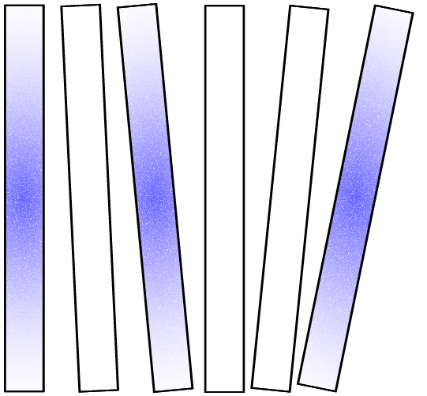

Phase 1
Data as Material
In the first part of the course, students find, collect and visualize structured data from reliable sources to frame the internet from various perspectives, providing a comprehensive overview of how it works, how it's used and its history through the decades.
The results are a collection of ten printed visualizations, one per group, tackling the complex shape and nature of the internet.